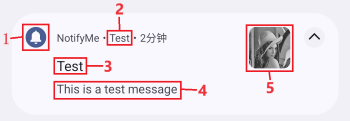
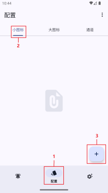
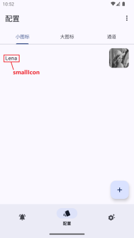
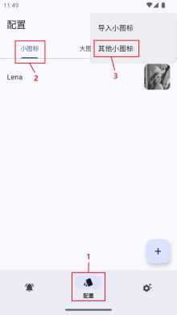
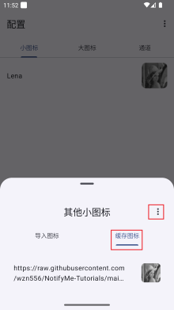
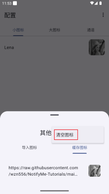
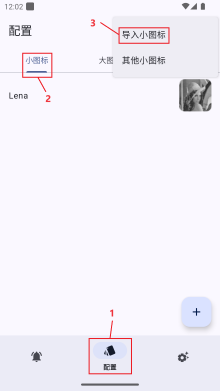
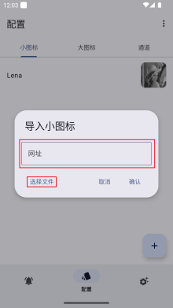
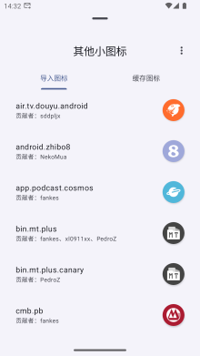
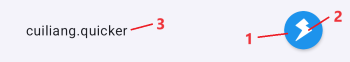

设置小图标
小图标概述
小图标指下图中1处指向的图标：

小图标通过iconType和smallIcon两个键值进行控制，支持以下几种使用方式：
- 使用应用内置通知图标；
- 使用 配置/小图标/＋ 添加的通知图标（应用内提前设置）；
- 使用网络通知图标（发送消息时设置）；
- 使用 配置/小图标/顶部菜单/导入小图标 导入的通知图标（应用内提前设置）；
- 使用 JSON 设置通知图标（发送消息时设置）。
使用内置图标
- 发送消息时，将
iconType（int）设置为0~5任意一键值，smallIcon无需设置。示例如下：
{
"data": {
"uuid": "CWYMVYWQHoPGXEkh9yP5Nd",
"ttl": 86400,
"priority": "normal",
"data": {
...
"iconType": 0,
"smallIcon":"",
...
}
}
}
iconType键值与图标的对应关系如下表：
| iconType | 0 | 1 | 2 | 3 | 4 | 5 |
| 对应图标 |
使用自定义图标
图片添加
- 点击 配置/小图标/＋ 后，选择图片，并输入图标名（以
Lena为例），完成小图标添加。此种方法添加的小图标并不符合Google规范，在部分系统（主要为原生、类原生系统）上会出现图标为全白，或被其他图形包裹等情况。如果显示出现问题，请使用批量导入或 JSON 图标。


- 发送消息时，将
iconType（int）设置为6，将smallIcon（string）设置为导入小图标时输入的名称（以Lena为例），即可使用。
{
"data": {
"uuid": "CWYMVYWQHoPGXEkh9yP5Nd",
"ttl": 86400,
"priority": "normal",
"data": {
...
"iconType": 6,
"smallIcon":"Lena",
...
}
}
}
网络图片
- 发送消息时，将
iconType（int）设置为7，将smallIcon（string）设置为图片的网址，即可使用。以https://raw.githubusercontent.com/wzn556/NotifyMe-Tutorials/main/assets/small_icons/web/Lena.jpeg为例：
{
"data": {
"uuid": "CWYMVYWQHoPGXEkh9yP5Nd",
"ttl": 86400,
"priority": "normal",
"data": {
...
"iconType": 7,
"smallIcon":"https://raw.githubusercontent.com/wzn556/NotifyMe-Tutorials/main/assets/small_icons/web/Lena.jpeg",
...
}
}
}
首次使用时 NotifyMe 会从网络保存此图片缓存，由于网络访问需要时间，可能会存在一定延迟。再次使用时，NotifyMe会直接从缓存调用此图片。
若网络图片发生变更，需在 配置/顶部菜单/其他小图标/缓存图标 单击删除该图标（或通过 缓存图标 界面的 菜单/清空图标 删除所有缓存图标），再次发送消息使 NotifyMe 重新缓存该图标。



批量导入
使用示例文件
- 通过 配置/小图标/顶部菜单/导入小图标 可批量导入图标，支持使用网址导入或从文件导入。以
https://raw.githubusercontent.com/wzn556/NotifyMe-Tutorials/main/import.json为例，可将该网址复制至文本栏，点击 确定 使用；或下载文件，通过 选择文件 导入。 - 发送消息时，将
iconType（int）设置为8，将smallIcon（string）设置为导入图标的名称（例如本示例中的cuiliang.quicker），即可使用。


{
"data": {
"uuid": "CWYMVYWQHoPGXEkh9yP5Nd",
"ttl": 86400,
"priority": "normal",
"data": {
...
"iconType": 8,
"smallIcon":"cuiliang.quicker",
...
}
}
}
使用“Android 通知图标规范适配计划”图标库
“Android 通知图标规范适配计划”旨在：为国内 Android 不规范的 APP 和厂商适配原生通知图标与规范图标修复，规范国内乱七八糟的 APP 生态，让国内用户也能体验到原生 Android 通知图标的规范美。
项目地址：Android 通知图标规范适配计划 | Github
使用方法：
- 通过 配置/小图标/顶部菜单/导入小图标 批量导入图标，可将网址
https://raw.githubusercontent.com/fankes/AndroidNotifyIconAdapt/main/APP/NotifyIconsSupportConfig.json复制至文本栏，点击 确定 使用；或下载文件，通过 选择文件 导入。 - 具体调用方法同使用示例文件。
请尊重原项目作者@fankes的劳动成果，转载时务必在显著的地方声明对原项目的引用和来源。

自定义导入文件
- 导入
.json文件，其内容为JSON数组（格式见 https://raw.githubusercontent.com/wzn556/NotifyMe-Tutorials/main/import.json ），该JSON数组包含一个或多个JSON对象，JSON对象的具体内容与 JSON 图标相同。
JSON 图标
-
发送消息时，将
iconType（int）设置为9，将smallIcon（JSON）设置为JSON对象，即可使用。 -
JSON对象示例如下：
{
"bitmap": "iVBORw0KGgoAAAANSUhEUgAAAEgAAABICAYAAABV7bNHAAAAAXNSR0IArs4c6QAAAvpJREFUeF7tm9tNxDAQRe1OoBOoBLYSoBKgEugEOjF7pUSyInb9mnvHidY/fGCS7NkzY884xHAbVwnEGfmklB5CCL8xxl/v55sKUErpLoTwHkIAoLcY4+sN0EJgsQZwAGkd7pCmMGiB83XBFldI7oBSSgijl0IouUFyBZRSgjXINzXjFGP8qJloOccF0CYZt3yee/XKJgdUyDc1sKSQpIAq800JEvZGjyqTZIAa8800kOiABvLNFJCogAzyjTskGiABnBXedwgBWwBK3UYBZJSMS/bkv387lygfDEjmgIyTcRMkRnFrBoiYjFsgme+RTAAJ8801WOgf3bfQrJk7DMgh32w/F5IzillKnTYEyDHfABJWL4DBT9roAuScb2DKJxvMSrwXUKJ9ZdcvjBqMasz29r2AfjatUQUvaZE6ahD6xmh25f1jBSSEF/IOZdf83wfoMmi90LKCPYlBAQ5KC0moDQECqAunEQqbaOVF/vDDgCawido8MwN0VJtMAWU24QDwWRFn2T0obQ8KoCPZRAN0FJvogJxtOqFmG9k3SQAtkLCpxBHzrnKTDFAWcgAEUOpdeNfRtRxQZtP6HpBysWte6VwAbTaXpTc7rAE2Fb2ugBab5K2TeO7u11Kvnlh7wZZ5Dr3s5kLXG5DSHpybYdlvGm6AhM3+Zmso1XzL17L0tNGVZI8ua2YAxG7ZDlnjCkgQWsPWuAEih5aZNZ6AWt5qbclPpta4ACKFFsUaOSBSaKGN8diiWc9cyT6IcIYvO2GlAzIOLYk1shAzDi2ZNUpAFquW3BoJIKNK3cUaOiCD0HK1RgGo5n/ALq267tZQAQ2E1jTWsAH1VOpTWUMD1LHnmdIaCqCOxDytNSxAtaE1vTXmgBpCaxfWmAKqDK1dWWMNqFRO7M4aM0CF0NqtNSaACqG1a2usAP0XWs1vT/R0+ZR/09UwSynhHR+8vpKPw1gzbFA6J5/sIoezxgLQuik8pDXDgJQ5wPteXTnI+6GV978BKtC+ASoA+gM1yWtYaHIK6AAAAABJRU5ErkJggg==",
"color": "#ff1d93ec",
"name": "cuiliang.quicker",
"contributor": "wzn556"
}
- 该JSON对象具有
bitmap、color、name、contributor四个键值对。 - 消息图标主要由
bitmap和color组成，bitmap为消息图标的图形（应为背景透明的纯白色图形，下图2处），color为消息图标的背景色（下图1处），name为图标名称（下图3处），contributor为贡献者名称。

-
各键值对对应数据如下：
bitmap（string）：消息图标位图数据，为 png 格式图片（像素小于72×72，背景透明，图形纯白）转换所得的 Base64 字符串。可使用网站图片转 Base64 (lddgo.net)进行转换，需删掉前面的data:image/png;base64,部分。厂商推送服务器对消息的大小有一定限制，位图过大时可能出现
Android message is too big错误，建议使用像素为72×72（可以略小，但不要超过）的图片。图片细节过多时，即使将尺寸设置为72×72，也可能过大。可选择对图片进行压缩处理（损失一定清晰度）。或使用Illustrator进行处理（对象/图像描摹/建立，选择预设：低保真度照片，在不损失清晰度的情况下，消除部分细节，缩减位图大小）。
在某些系统中（例如ColorOS），彩色
bitmap能够以完整的色彩显示，如下图；但在（类）原生系统中，彩色bitmap会强制转化为白色。其他系统表现可能不同，可测试后反馈，在此补充。-
color（string）：消息图标的背景颜色，无需设置透明度（透明度不会生效）。 -
name（string）：消息图标的名称，建议使用应用包名作为名称（便于通知转发时使用），或使用作者.作品的形式（例如cuiliang.quicker）。
-
使用时的消息 JSON 如下：
{
"data": {
"uuid": "CWYMVYWQHoPGXEkh9yP5Nd",
"ttl": 86400,
"priority": "normal",
"data": {
...
"iconType": 9,
"smallIcon":{
"bitmap": "iVBORw0KGgoAAAANSUhEUgAAAEgAAABICAYAAABV7bNHAAAAAXNSR0IArs4c6QAAAvpJREFUeF7tm9tNxDAQRe1OoBOoBLYSoBKgEugEOjF7pUSyInb9mnvHidY/fGCS7NkzY884xHAbVwnEGfmklB5CCL8xxl/v55sKUErpLoTwHkIAoLcY4+sN0EJgsQZwAGkd7pCmMGiB83XBFldI7oBSSgijl0IouUFyBZRSgjXINzXjFGP8qJloOccF0CYZt3yee/XKJgdUyDc1sKSQpIAq800JEvZGjyqTZIAa8800kOiABvLNFJCogAzyjTskGiABnBXedwgBWwBK3UYBZJSMS/bkv387lygfDEjmgIyTcRMkRnFrBoiYjFsgme+RTAAJ8801WOgf3bfQrJk7DMgh32w/F5IzillKnTYEyDHfABJWL4DBT9roAuScb2DKJxvMSrwXUKJ9ZdcvjBqMasz29r2AfjatUQUvaZE6ahD6xmh25f1jBSSEF/IOZdf83wfoMmi90LKCPYlBAQ5KC0moDQECqAunEQqbaOVF/vDDgCawido8MwN0VJtMAWU24QDwWRFn2T0obQ8KoCPZRAN0FJvogJxtOqFmG9k3SQAtkLCpxBHzrnKTDFAWcgAEUOpdeNfRtRxQZtP6HpBysWte6VwAbTaXpTc7rAE2Fb2ugBab5K2TeO7u11Kvnlh7wZZ5Dr3s5kLXG5DSHpybYdlvGm6AhM3+Zmso1XzL17L0tNGVZI8ua2YAxG7ZDlnjCkgQWsPWuAEih5aZNZ6AWt5qbclPpta4ACKFFsUaOSBSaKGN8diiWc9cyT6IcIYvO2GlAzIOLYk1shAzDi2ZNUpAFquW3BoJIKNK3cUaOiCD0HK1RgGo5n/ALq267tZQAQ2E1jTWsAH1VOpTWUMD1LHnmdIaCqCOxDytNSxAtaE1vTXmgBpCaxfWmAKqDK1dWWMNqFRO7M4aM0CF0NqtNSaACqG1a2usAP0XWs1vT/R0+ZR/09UwSynhHR+8vpKPw1gzbFA6J5/sIoezxgLQuik8pDXDgJQ5wPteXTnI+6GV978BKtC+ASoA+gM1yWtYaHIK6AAAAABJRU5ErkJggg==",
"color": "#ff1d93ec",
"name": "cuiliang.quicker"
},
...
}
}
}